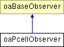

oaPcellObserver Class Reference
Inheritance diagram for oaPcellObserver:

Detailed Description
The oaPcellObserver class is a base template class for IPcell observers. It supports onError, preEval, and postEval event notifications.
See oaObserver for information on using OpenAccess observer template classes to derive and instantiate observers in an application.
Constructor & Destructor Documentation
| oaPcellObserver::oaPcellObserver |
( |
oaUInt4 |
priorityIn, |
|
|
oaBoolean |
enabledIn = true |
|
) |
|
|
|
|
This is the default constructor for the oaPcellObserver class. It adds this observer to the list of pCell observers. priorityIn is used to determine where the observer should be inserted. The observers are ordered by the priority from lowest to highest.
- Parameters:
-
| priorityIn | priorityIn priority of this observer relative to other oaPcellObserver observers |
| enabledIn | Determines whether this observer is called when an observed event occurs |
|
| oaPcellObserver::~oaPcellObserver |
( |
|
) |
[virtual] |
|
|
|
This is the destructor for the oaPcellObserver class. It removes this observer from the pCell observer list. |
Member Function Documentation
|
|
This function is called when an error occured during the pcell evalution.
- Parameters:
-
| design | A pointer to the design where the error occured. It can be either the superMaster or subMaster. |
| msg | error message |
| type | oaPcellErrorTypeEnum value |
|
|
|
This function is called after a pCell master's generation code is evaluated. The application's derived class should implement this function to receive notification when a pCell master has been evaluated.
- Parameters:
-
| design | A pointer to the pCell master |
| pcellDef | A pointer to the modified pCell definition object |
|
|
|
This function is called just before a pCell master's generation code is evaluated. The application's derived class should implement this function to receive notification when a pCell master is about to be evaluated.
- Parameters:
-
| design | A pointer to the pCell master |
| pcellDef | A pointer to the pCell definition object to be evaluated |
|
The documentation for this class was generated from the following files:
Return to top of page
Copyright © 2002 - 2010 Cadence Design Systems, Inc.
All Rights Reserved.